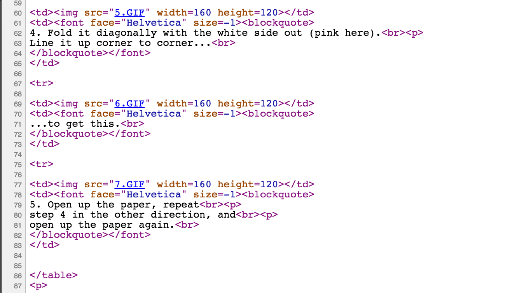

The Intergalactic Computer Network
Video: https://www.youtube.com/watch?v=FEWBYidplzI Mali Akmanalp / @makmanalp
“... the main and essential medium of informational interaction for governments, institutions, corporations, and individuals”
- Licklider, BBN, 1963
“I predict the Internet will soon go spectacularly supernova and in 1996 catastrophically collapse.”
- Metcalfe, 1995
Under the hood
atlas.cid.harvard.edu
54.172.187.241
No central authority
Demo
nslookup
ping
traceroute
How do we know where to go on that computer?
ports 0-65535
80 -> HTTP
Demo
telnet
HTML
Demo
HTML
Python
SQL
Where is this server, really?
The Cloud
The website is running on a computer.
The website is running somewhere.
I have never seen it.
No one has ever seen it.
It seems to exist.
I willed it into existence.
Demo
Scale up to demand
Autoscaling!

Tiny teams can run big websites
No field maintenance
Dumb terminals
"in the cloud"
not on your computer
Big Data
A simple word document
1-2MB
A song
5-10MB
A large presentation
100MB
Municipality level dataset
1GB
Largest dataset we have
20GB x 8 = 160GB
Largest hard drive on Amazon
8TB
Data transfer within Google
~40GB / s
Size of a large cluster in Google
~5PB
All the data Facebook has
~400PB
Where is the data point I want?
What is the current value of something?
Does the data point I wanted even exist anymore?
How do I make sense of all this?
How is this even possible?
The internet is ridiculous
No central authority
No central transit system
No one knows each other
You have never talked to most of
the computers you talked to today
Imagine building an airplane ...
There is no boss
Some people kind of know what it should look like
There is no spec for all of it
... no one knows how all of it works
... no one knows how most of it works
No one can force anyone to follow the rules
Not everyone agrees on how to build things
Often, the parts change without notice
People decide to build their own parts
Most of the people never met each other
Most of the people never talk
It's kind of emergent
No top down quality control
Things break all the time
But it works!
We are building it in flight!
The End
- twitter.com/makmanalp
- akmanalp.com/how-websites-work/
ᕕ( ᐛ )ᕗ
Postel's law
The protocol stack
- Application Layer
- Transport Layer
- Network Layer
- Link Layer
- Physical Layer